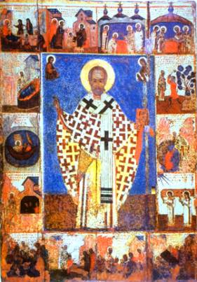

The Early Years
of St. Nicholas
St. Metaphrastes wrote that young Nicholas
showed from the beginning that he wanted to please God. As a young boy
he did not involve himself in the games and pranks of the other children of
Patara. He also avoided vain friends and their idle conversations.
Nicholas also preserved a pure mind, always
contemplating on the Lord and diligently attending church, following the example of
the psalmist, who said:
“For a day in Your courts is better than a thousand.
I would rather be a doorkeeper in the house of my God than dwell in the tents
of wickedness.” (Psalm 84:10 NKJV)
He was exceedingly well brought up by his parents and walked piously in their footsteps. His mother and father taught him to be generous to others, especially to those in need. Nicholas learned that helping others makes one richer in life than anything else.
When he reached school age, he demonstrated, through
intelligence and knowledge, that he learned far more from the Holy Spirit than
he did from his teachers. When the time came to learn the Holy Scriptures,
Nicholas, by the force and acuteness of his mind and the help of the Holy
Spirit, in a little time attained much wisdom and succeeded in book-learning.
The Spirit of God indeed dwelt in this virtuous and pure youth and, serving the Lord, his personality glowed with the Spirit.
Nicholas passed entire days and nights in church lifting up his mind to God in prayer and reading the Holy Scriptures and other divine books. He meditated on spiritual knowledge, enriching himself in the divine grace of the Holy Spirit and creating within himself a worthy dwelling for Him, in accordance with the words of Holy Scripture:
“Do you not know that you are the temple of God and
that the Spirit of God dwells in you?” (I
Corinthians 3:16 NKJV)
Young Nicholas often visited his uncle Nicholas, who
was bishop over Patara, and helped him with the Divine Liturgy there. Under
Uncle Nicholas’ guardianship, the young boy learned the texts of prayers,
details of rituals, and showed a remarkably quick mind and sincere devotion.
Nicholas assisted the older men at the church so
that he might benefit from their example and guidance. He then strove to live
according to the Christian principles he had learned from them and from his
parents.
Nicholas was nine years old when a plague swept
through his village. Both his father and mother died. Although Nicholas moved
in with friends of his parents, he felt lost without the two people he had
loved so dearly.
As Nicholas grew older he learned to share the love he had given his parents with the people of his village. His parents had left him an inheritance, which enabled him to buy food for the hungry, to dress the naked and care for orphans and widows. He was known to beg for food for the poor. One story claims that he would dress up in a disguise and go out into the streets and give gifts to poor children.
Nicholas was careful to remain anonymous with his
charities. Usually he preferred to receive no credit for his gifts, desiring
rather to make his visits to the homes of the poor and unfortunate under the
cloak of darkness so that no one would know who he was. Nicholas felt that if anyone
should receive the praise and glory, it should be God, and not himself.
“’But when you do a charitable deed, do not let your
left hand know what your right hand is doing, that your charitable deed may be
in secret; and your Father who sees in secret will Himself reward you openly.’”
(Matthew 6:3-4 NKJV)
St. Metaphrastes wrote that,
“Being humble, the Saint sought to avoid men’s praises, but once again he could not hide his virtues, as they were God-given and served all those who followed his guidance.”
His uncle rejoiced at the spiritual success and deep piety
of his nephew. He ordained Nicholas a reader in the church, and then elevated
him to the dignity of presbyter, making him his assistant and entrusting him to
speak, instructing the flock. In serving the Lord, young Nicholas was
fervent of spirit, and in his proficiency with questions of faith, he was like
an elder, which aroused the wonder and deep respect of believers.
Constantly at work and in prayer, presbyter Nicholas
displayed great kind-heartedness towards the flock, and towards the afflicted
who came to him for help.
Because he lived such an ascetic and righteous life,
Nicholas was ordained into the priesthood at New Zion when he was nineteen
years old. His uncle – addressing him as he took his vows – prophesied:
“I see, brethren, a new sun rising above the Earth and manifesting in himself a gracious consolation for the afflicted. Blessed is the flock that will be worthy to have him as its pastor, because this one will shepherd well the souls of those who have gone astray, will nourish them on the pasturage of piety, and will be a merciful helper in misfortune and tribulation.”
This prophecy was indeed
later fulfilled. Nicholas was not only a diligent young man and student, but he
proved to be an exceptional priest as well. God gave him the gift to work
signs and wonders and to heal the sick.
Nicholas now added labors to labors, keeping vigil and remaining in unceasing prayer. Merciful, trustworthy and loving right, he walked among the people like an angel of God. People considered him a Saint even during his lifetime, and invoked his aid when in torment or distress. Leading a life equal to the angels and flowering from day to day all the more in beauty of soul, he was entirely worthy to rule in the church.
Thought to Ponder: In this story, we saw the effect that Nicholas’ parents had on him. He was exceedingly well brought up by them and walked piously in their footsteps. They taught him to be generous to others, especially to those in need. Nicholas learned that helping others makes one richer in life than anything else.
Thought to Discuss around the Dinner Table: What kind of example are we setting for our children? What values are we nurturing in them? How can we do better?
Close your eyes for a moment and imagine your children ten years from now. What qualities would you like to see in them? How are you helping them achieve those qualities? Where could you improve?
The Early Years
of St. Nicholas

“Let no one despise your youth, but be an example to
the believers in word, in conduct, in love, in spirit, in faith, in purity.” (I Timothy 4:12 NKJV)